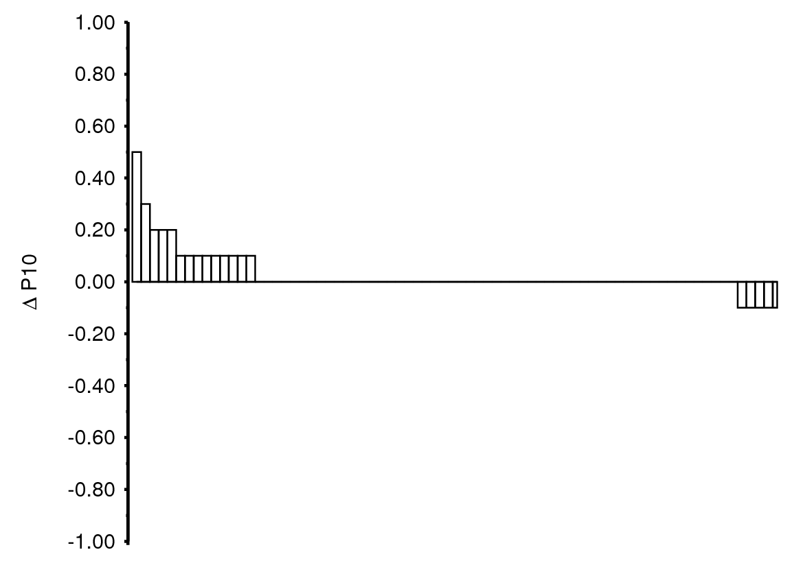
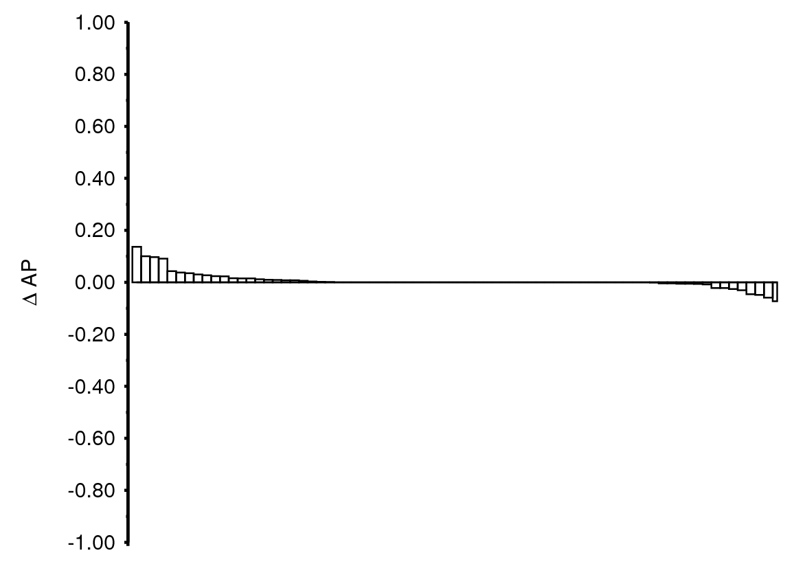
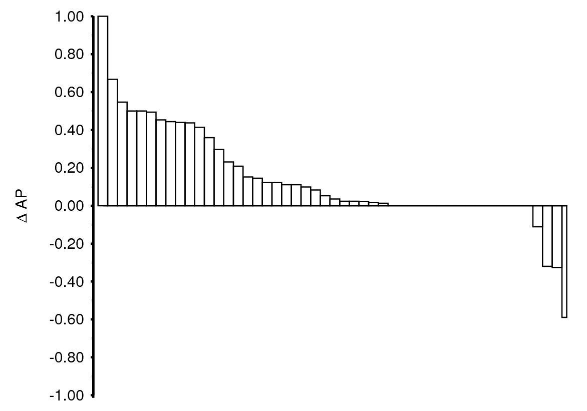
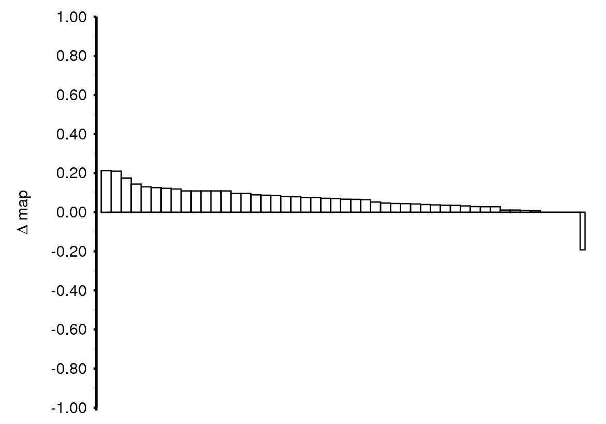
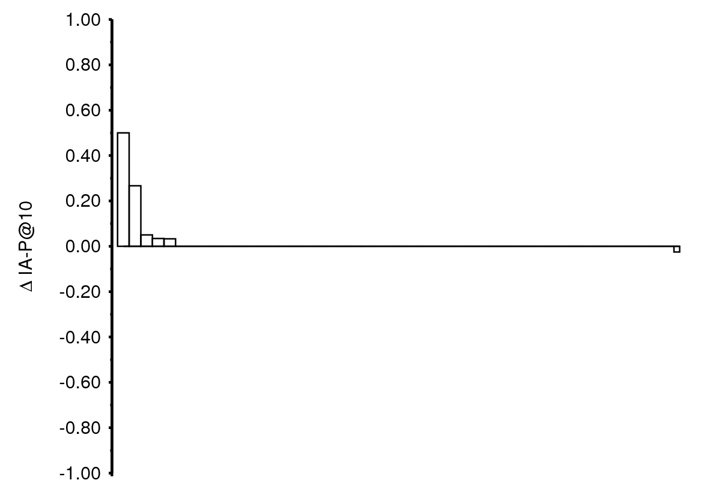
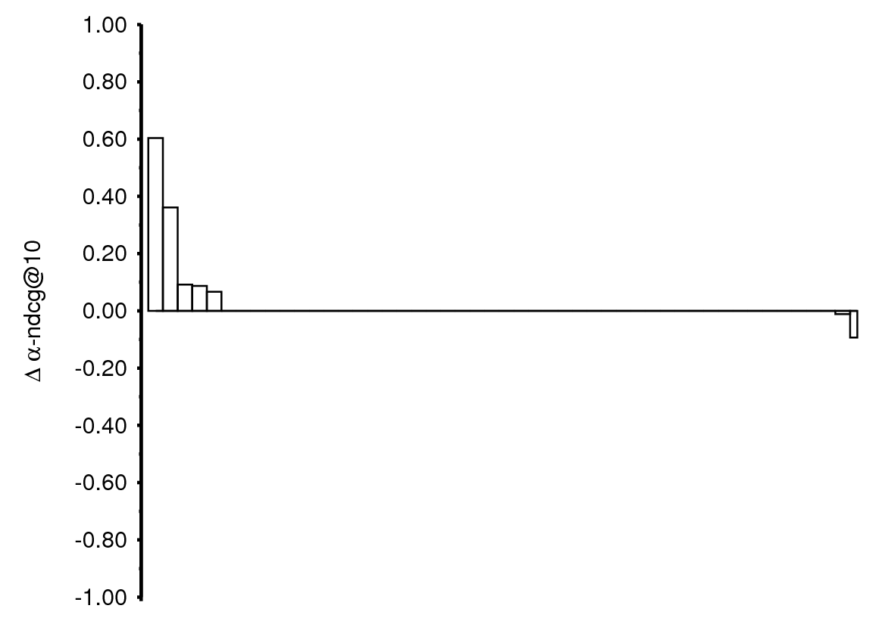

| Up | Next | Prev | PrevTail | Tail |
Before we report on the experimental results, we first note the performance of results reported in the literature on the test collections employed in this chapter. For the TREC Terabyte test collection, this number is not available since we (i) use an aggregation of the topic sets from all TREC Terabyte 2004–2006 tracks and (ii) split this new topic set in a training and test set. We do note, however, that the average MAP score of all systems participating in the TREC Terabyte 2004–2006 tracks is roughly 0.30. For TREC Web 2009, we cannot compare our absolute scores with those presented in the literature, since we use the mtc-eval evaluation methodology [61]. Hence, we determine the probability of relevance for each unjudged document retrieved by the runs presented in this chapter using the expert tool.1
Table 7.2 lists the results on the TREC Terabyte test collection, optimized for MAP. Here, applying RM-1 to pseudo relevant documents from the collection yields highest MAP, although the difference with respect to the MAP values for RM (WP) and WP-SVM is very small. All models obtain significant improvements over the baseline in terms of MAP. When the query models are estimated on Wikipedia, the highest mean reciprocal rank (MRR) is obtained, with WP-SVM following closely; only WP-SVM and RM (WP) obtain significant improvements in terms of MRR and recall. WP-SVM retrieves the most relevant documents of all the models on this collection. Interestingly, it also obtains the highest early precision.
| P10 | RelRet | MRR | MAP
| ||||||
| QL | 0.0 | 0.439 | 0% | 6965 | 0% | 0.631 | 0% | 0.228 | 0% |
| RM (C) | 0.3 | 0.515* | +17% | 7872* | +13% | 0.623 | -1% | 0.294* | +29% |
| RM (WP) | 0.2 | 0.527* | +20% | 7836* | +13% | 0.713* | +13% | 0.287* | +26% |
| WP-SVM | 0.2 | 0.532* | +21% | 7902* | +13% | 0.711* | +13% | 0.286* | +25% |
| 
(a) P10 |
| 
(b) MAP |
Figure 7.2 shows a per-topic plot of the performance of WP-SVM relative to the baseline (a positive value indicates an improvement over the baseline). The first thing to note is that there are a number of topics that are neither helped nor hurt. One of the properties of the conceptual mapping approach is that the SVM may decide that none of the candidate concepts are relevant. The query model is left as is in that case, yielding the same performance as the baseline. This is the case for 30 out of the 75 TREC Terabyte topics. We further observe that, although about as many topics are helped as hurt in terms of MAP, there are more topics that are helped more using WP-SVM on early precision. So, in those cases where concepts are identified, early precision is helped most.
Topic #847 (“Portugal World War II”) is a topic that is hurt when applying WP-SVM. Here, the two concepts that are returned (LIST OF MILITARY VEHICLES and LIST OF SHIPWRECKS IN 1943) are vaguely related but not relevant to the query. Topics that are helped using WP-SVM include “train station security measures” (#711), caused by the suggested concept SECURITY ON THE MASS RAPID TRANSIT. Another topic that is helped on this test collection is topic #733 “Airline overbooking”. Here, the concept AIRLINE is the only suggestion. For topic #849 (“Scalable Vector Graphics”), the concepts SCALABLE VECTOR GRAPHICS and VECTOR GRAPHICS are returned, causing 42 more relevant documents to be returned. These findings provide evidence that Wikipedia is a useful resource for query modeling; the approach functions as both a recall- and a precision-enhancing device.
|
| eP10 | eR-prec | eMAP
| ||||
| QL | 1.0 | 0.077 | 0% | 0.272 | 0% | 0.127 | 0% |
| RM (C) | 0.5 | 0.070 | -9% | 0.278 | +2% | 0.130 | +2% |
| RM (WP) | 0.5 | 0.082* | +6% | 0.268* | -1% | 0.123* | -3% |
| WP-SVM | 0.0 | 0.241* | +213% | 0.348* | +28% | 0.193* | +52% |
|
| |||||||
As to TREC Web 2009, Table 7.3 shows the results on this test collection, using mtc-eval measures [61], which were introduced in Chapter 3. On this collection of web pages, we observe that merely relying on the baseline approach yields very low retrieval performance. Applying pseudo relevance feedback on the collection does not help; in fact, retrieval performance in terms of early precision is degraded in that case.
When estimating a relevance model from Wikipedia (RM (WP)), we find a slight decrease in terms of eMAP. It does yield a significant improvement in terms of eP10, however. Moreover, in this case, eR-prec is also significantly improved. WP-SVM improves the performance on all metrics. Interestingly, the best results here are obtained when , i.e., when all probability mass is given to the expanded query part.
| 
(a) eP10 |
| 
(b) eMAP |
Figure 7.3 again shows per-topic plots, this time for the TREC Web test collection. From these plots it is clear that WP-SVM helps to substantially improve early precision on this test collection; eMAP is also improved over almost all topics. Topics that are helped most include #46 (“alexian brothers hospital”—caused by the concepts ALEXIANS and LIST OF HOSPITALS IN ILLINOIS) and #25 (“euclid”—caused by the single matching concept EUCLID). Topic #12 (“djs”) is hurt most in terms of eP10 and is the only topic that is hurt on eMAP. Here, three DJs are identified as concepts (QUAD CITY DJ’S, PLUMP DJS, and SOULWAX) but they do not help to improve on early precision. In sum, the results presented so far indicate that supervised query modeling using Wikipedia is helpful for large, noisy collections.
|
| IA-P@10 | -nDCG@10
| |||
| QL | 1.0 | 0.017 | 0% | 0.041 | 0% |
| RM (C) | 0.5 | 0.013 | -24% | 0.032* | -22% |
| RM (WP) | 0.5 | 0.016 | -6% | 0.038 | -7% |
| WP-SVM | 0.6 | 0.035 | +106% | 0.065 | +59% |
|
| |||||
The TREC Web 2009 track featured a sub-track in which the aim was to improve upon diversity in the document ranking, as introduced in Chapter 3. Recall that diversity aims to reward those document rankings in which documents that are related to subtopics of the query appear at the top. Moreover, rankings that retrieve documents relating to many subtopics are preferred to those that cover fewer subtopics. The subtopics for the TREC Web 2009 track are based on information extracted from the logs of a commercial search engine and roughly balanced in terms of popularity. When we evaluate WP-SVM on the TREC Web 2009 collection using the diversity track’s measures, cf. Table 7.4, we arrive at the same picture as for ad hoc retrieval.1 1The absolute values shown in Table 7.4 are low as compared to those obtained by the participants of that particular track (the median IA-P@10 score lies around 0.054). We note, however, that the runs presented in this chapter do not incorporate any information pertaining to the graph structure associated with the web pages, nor do they explicitly incorporate diversity information [126, 167]. The method presented here may be applied in conjunction with any diversity-improving algorithm. Pseudo relevance feedback on the collection hurts diversity using both measures. We observe the same results, although to a lesser extent, when applying pseudo relevance feedback on Wikipedia. When we use WP-SVM, however, the diversity of the document rankings is improved, as measured by both IA-P@10 and -nDCG@10, although not significantly so.
| 
(a) IA-P@10 |
| 
(b) -NDCG@10 |
Figure 7.4 shows per-topic plots of the diversity measures, comparing the baseline to WP-SVM. From these plots it is clear why we do not obtain significant improvements; diversity is only helped on a small number of topics. Topic #49 (“flame designs”) is the only topic that is hurt. For this topic, the concepts FLAME OF RECCA and GEORDIE LAMP are retrieved. Both do not seem relevant to the topic, causing the decline in terms of diversity performance. In contrast, topics #1 (“obama family tree”) and #46 (“alexian brothers hospital”) are examples of topics that are helped. For the first, the concepts FAMILY TREE, MICHELLE OBAMA, and RULERS OF RUSSIA FAMILY TREE are identified. For the second, the concepts ALEXIANS and LIST OF HOSPITALS IN ILLINOIS are identified. In both cases, each concept refers to a different aspect of the query. Hence, the estimated query models are also diverse in these aspects which in turn helps to improve diversity in the resulting document ranking. These findings, in conjunction with the examples provided earlier, indicate that our query modeling approach caters for multiple interpretations of the query since prominent terms from the Wikipedia article associated with each identified concept are included in the query model.
| Up | Next | Prev | PrevTail | Front |